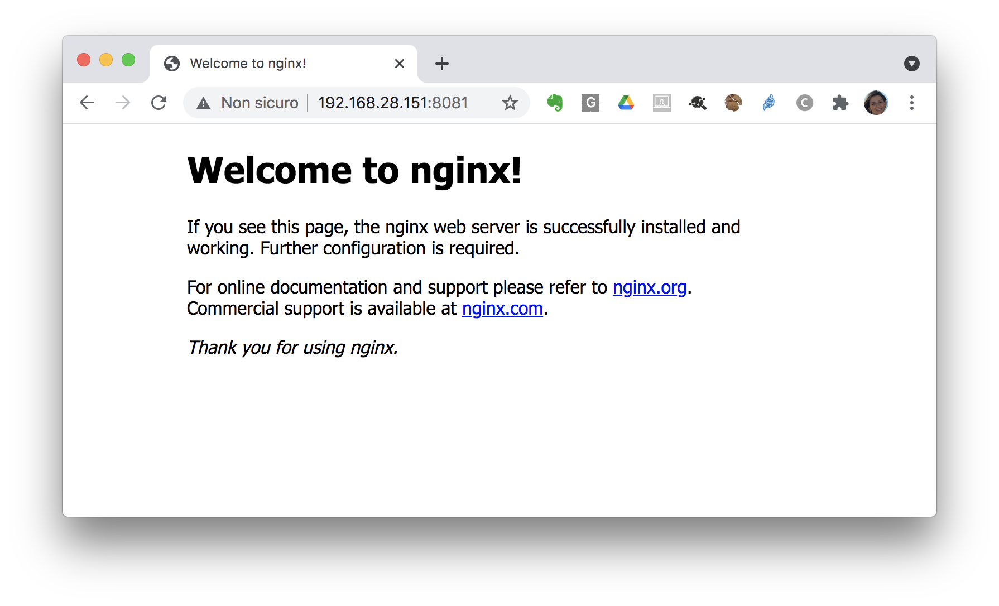

Docker volume plugins - an example
Docker Engine volume plugins enable Engine deployments to be integrated with external storage systems such as NFS, Ceph, Openstack Cinder, Amazon EBS, and enable data volumes to persist beyond the lifetime of a single Docker host.
This section will show an example using the Netshare docker volume plugin to mount NFS shares inside our container.
Note
Netshare is a Docker volume plugin for NFS 3/4, EFS and CIFS/SMB.
We will show its usage with NFS as an example. However consider that you can attach NFS volumes to docker containers using the local driver as well since docker provides natively the support for NFS. For example:
# docker volume create --driver local --opt type=nfs --opt o=addr=<nfs server ip>,rw --opt device=:<export nfs path> <volume name>
The plugin has been installed following the instructions provided in the docs.
The NFS server has been installed on the machine with IP 192.168.28.53 and configured to export the path /mnt/nfs_share/nginx:
Export list for 192.168.28.53:
/mnt/nfs_share/nginx 192.168.28.151
You can check that the docker plugin service is up and running on the docker host:
sudo systemctl status docker-volume-netshare
● docker-volume-netshare.service - LSB: Init for docker-volume-netshare
Loaded: loaded (/etc/init.d/docker-volume-netshare; generated)
Active: active (running) since Sun 2021-06-13 13:23:58 UTC; 1h 6min ago
Docs: man:systemd-sysv-generator(8)
Process: 716471 ExecStart=/etc/init.d/docker-volume-netshare start (code=exited, status=0/SUCCESS)
Tasks: 5 (limit: 4683)
Memory: 6.3M
CGroup: /system.slice/docker-volume-netshare.service
└─716480 /usr/bin/docker-volume-netshare nfs
Jun 13 13:23:58 tutorvm-1 systemd[1]: Starting LSB: Init for docker-volume-netshare...
Jun 13 13:23:58 tutorvm-1 docker-volume-netshare[716471]: * Starting Docker-Volume-Netshare: docker-volume-netshare
Jun 13 13:23:58 tutorvm-1 docker-volume-netshare[716471]: ...done.
Jun 13 13:23:58 tutorvm-1 systemd[1]: Started LSB: Init for docker-volume-netshare.
Launch the nginx container with an NFS docker volume:
docker run -d -p 8081:80 --name nginx_nfs --volume-driver=nfs -v 192.168.28.53/mnt/nfs_share/nginx:/usr/share/nginx/html nginx
Check the volume list:
docker volume ls
DRIVER VOLUME NAME
nfs 192.168.28.53/mnt/nfs_share/nginx
Inspect the volume:
docker inspect 192.168.28.53/mnt/nfs_share/nginx
[
{
"CreatedAt": "0001-01-01T00:00:00Z",
"Driver": "nfs",
"Labels": null,
"Mountpoint": "/var/lib/docker-volumes/netshare/nfs/192.168.28.53/mnt/nfs_share/nginx",
"Name": "192.168.28.53/mnt/nfs_share/nginx",
"Options": null,
"Scope": "local"
}
]
The plugin has automatically mounted the NFS volume on your docker host...look at the mounts:
sudo mount | grep nginx
192.168.28.53:/mnt/nfs_share/nginx on /var/lib/docker-volumes/netshare/nfs/192.168.28.53/mnt/nfs_share/nginx type nfs4 (rw,relatime,vers=4.2,rsize=524288,wsize=524288,namlen=255,hard,proto=tcp,timeo=600,retrans=2,sec=sys,clientaddr=192.168.28.151,local_lock=none,addr=192.168.28.53)
Now connect to the deployed service (nginx) on port 8081:
